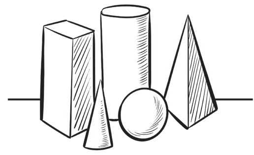

Activity 9
Use cycle and cylinder shapes to draw a dog in a standing position.
Activity 10
By using basic shapes like circles or rectangles, draw an image of your choice.
Lines
Lines define shapes and show boundaries. Lines also show reality, direction, unity, distance, and depth in an image. The ability to use lines skilfully enhances the appearance of an image. Figure 13 shows the shapes of these images which have been drawn using lines.

Lines describe the orientation of an image by indicating whether it has a vertical, horizontal, or varied direction. Lines can also be used to represent invisible elements, such as the direction of the wind. Additionally, lines are used to indicate distance in an image.
Images appearing in vertical directions
The viewer can infer the direction of the lines from how they are oriented. For example, in Figure 14, the lines in the trees indicate a vertical direction.